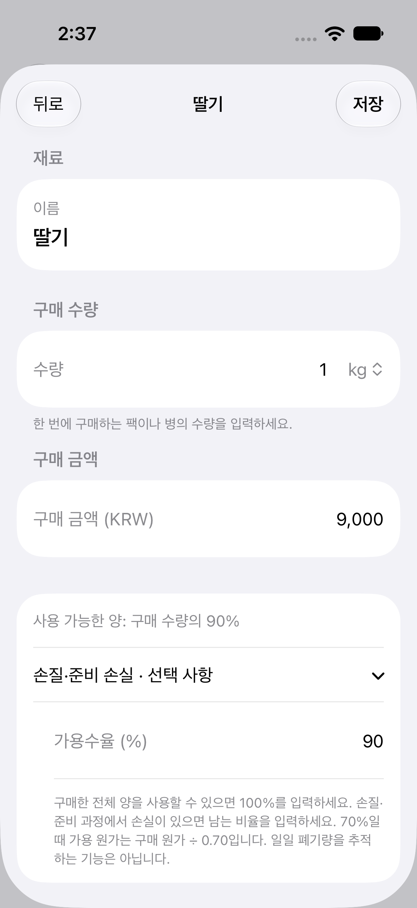
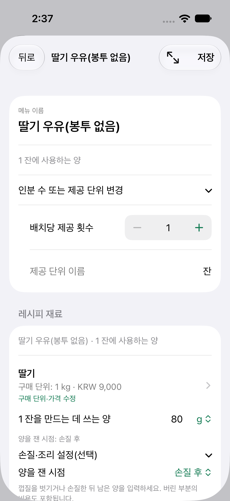
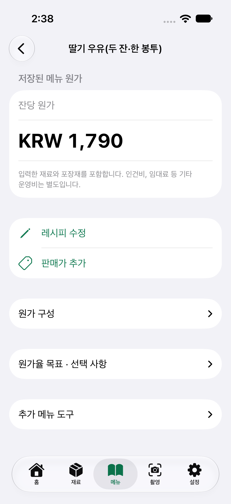

카페 원가 연구소
식자재·포장재 비용까지 포함한 메뉴 원가 계산 실전
식자재·포장재를 포함한 메뉴 원가는 실제로 쓸 수 있는 재료의 단가에 사용량을 곱하고, 주문에 쓰는 포장재 비용을 더해 계산합니다. 딸기 우유 한 잔으로 손질 손실과 포장 구성을 확인해 보겠습니다.
이 글은 키친마진 개발자가 작성한 원가 계산 예시입니다. 모든 금액·수량은 설명용 가정이며 실제 매장 자료가 아닙니다.
| 계산 항목 | 결과 |
|---|---|
| 한 잔 식재료 | 1,550원 |
| 봉투 없는 한 잔 | 1,740원 |
| 두 잔에 쇼핑백 하나(100원) | 합계 3,580원 / 잔당 1,790원 |
| 한 잔에 쇼핑백 하나(100원) | 1,840원 |
직접 입력하는 구매·사용량 예시
구매 가격은 모두 부가세 포함 설명용 가정입니다. 포장재는 묶음 전체의 수량과 가격이며 ea는 개수 단위입니다. 우리 매장의 실제 구매 값으로 바꿔 입력하세요.
| 재료·포장재 | 구매 포장 전체 수량·가격 | 한 잔 사용량 | 사용분 원가 |
|---|---|---|---|
| 딸기 | 1 kg · ₩9,000 | 80 g | ₩800 |
| 우유 | 1 L · ₩3,000 | 180 mL | ₩540 |
| 시럽 | 1 L · ₩8,000 | 20 mL | ₩160 |
| 얼음 | 1 kg · ₩250 | 200 g | ₩50 |
| 컵 | 100 ea · ₩10,000 | 1 ea | ₩100 |
| 뚜껑 | 100 ea · ₩4,000 | 1 ea | ₩40 |
| 빨대 | 100 ea · ₩2,000 | 1 ea | ₩20 |
| 홀더 | 100 ea · ₩3,000 | 1 ea | ₩30 |
| 쇼핑백 | 100 ea · ₩10,000 | 0 / 1 ea | ₩0 / ₩100 |
딸기는 가용수율 90%, 손질 후 80g 기준입니다. 쇼핑백 행만 주문당 수량·비용이며, 나머지 행은 한 잔 기준입니다. 두 잔 주문에는 나머지 사용량을 두 배로 넣고 쇼핑백 1개를 더합니다.
1. 손질 수율을 먼저 반영합니다
딸기 1kg을 9,000원에 샀고 꼭지·상한 부분을 제거한 뒤 900g이 남았다면 가용수율은 90%입니다. 사용 가능한 1g의 원가는 9,000 ÷ 900 = 10원, 손질한 딸기 80g을 쓰면 딸기값은 800원입니다. 손질 전후 무게를 같은 저울로 재서 기록해 두세요. 손질 손실을 이미 반영했으니 같은 손실을 다시 더하지 않습니다.
2. 나머지 식자재를 더합니다
우유 1L 3,000원 중 180mL = 540원, 시럽 1L 8,000원 중 20mL = 160원, 얼음 1kg 250원 중 200g = 50원. 식자재비는 800 + 540 + 160 + 50 = 1,550원입니다.
3. 포장재와 주문 구성을 구분합니다
컵 100원, 뚜껑 40원, 빨대 20원, 홀더 30원 = 190원. 봉투 없는 한 잔 원가는 1,740원입니다. 매장용 잔에는 일회용 포장비를 그대로 붙이지 않습니다. 쇼핑백(100원)에 두 잔을 담는 주문이라면 합계 3,580원, 잔당 1,790원입니다. 한 잔을 쇼핑백에 담으면 1,840원이니 주문 구성을 구분해야 합니다.
실전에서는 레시피를 '두 스푼' 대신 '80g'처럼 재현 가능한 단위로 기록하고, 손질·조리 손실을 확인하세요. 포장재는 실제 발주 수량과 전체 가격으로 낱개 단가를 구합니다. 자주 쓰거나 가격 변동이 큰 재료부터 정기적으로 단가를 점검해 보세요. 주기는 매장 상황에 맞추면 됩니다.
모든 매입액은 부가세 포함 기준입니다. 이 계산은 식자재·포장재 기준이며 인건비, 임차료, 결제 수수료 등은 포함하지 않습니다.
앱으로 따라 계산하기
통화를 KRW로 맞추고 재료 설정에서 딸기 1kg·9,000원, '가용수율' 90%를 저장하세요. 메뉴 '딸기 우유(포장)'의 '배치당 제공 횟수'를 1로 두고, 딸기 사용량의 기준을 '손질 후'·80g으로 맞춥니다. 우유·시럽·얼음·포장재도 위 구매 수량과 전체 가격으로 등록한 뒤 사용량을 넣으면 봉투 없는 한 잔 원가 1,740원입니다. 두 잔을 한 쇼핑백에 담는 별도 메뉴는 제공 횟수 2, 재료·기본 포장재 사용량 두 배, 쇼핑백 1개로 입력합니다. 자세한 순서는 키친마진 한국어 사용 가이드에서 확인할 수 있습니다.
앱 화면으로 확인하기
출시된 1.2 앱을 iPhone 시뮬레이터에서 직접 캡처한 한국어 화면입니다. 입력값은 설명용 가정이며 실제 매장 자료가 아닙니다.






iPhone 앱 Kitchen Margin(키친마진)은 입력한 식자재와 포장재로 1인분 원가를 자동 계산합니다.